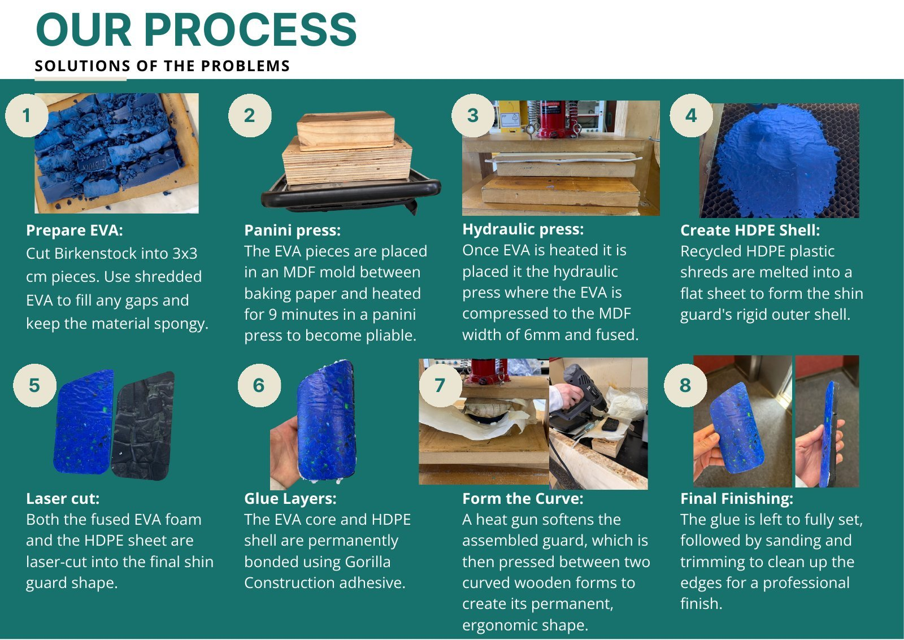
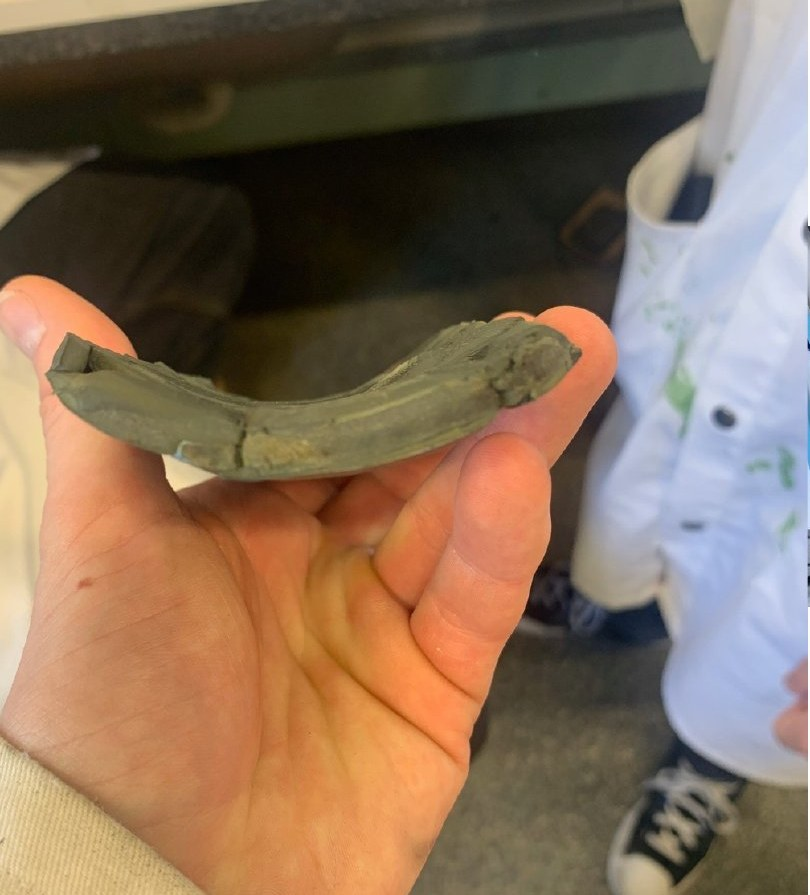

The problem
Millions of EVA shoes go to landfill every year, and EVA and HDPE are rarely recycled in New Zealand. Meanwhile, shin guards are made from virgin plastic.
Our brief was to recycle a waste material into a new product. EVA foam stays recyclable even when worn, and it already has the impact absorption and long-term skin contact that shin guards need. For the rigid outer shell we turned to HDPE bottle caps: light, tough, impact-resistant, waterproof and easy to collect.
Two recycled materials that complement each other: soft EVA inside, strong HDPE outside.
Finding the material
We contacted Crocs and other EVA producers about scraps and additives, and later smaller local companies, but got little or no response. So we sourced our own from op shops, Facebook Marketplace, clothing bins, friends and family.
We heated Crocs, Birkenstocks, Red Band gumboots, jandals and cow collars to the same temperatures to see which fused best, then tested five ways of heating and three adhesives.
- Panini pressBest for fusing: direct heat without early pressure
- Heat pressFailed: heat and pressure together stopped the EVA flowing
- Mini ovenFailed: couldn't get heat into the inner pieces
- Heat gunBest for shaping: precise, local heat for bending
- Hydraulic pressEssential: compressed the EVA into a 6 mm sheet
- AdhesiveSuper glue, epoxy and Gorilla Construction glue tested; Gorilla used
Our process
Prepare EVA
Cut Birkenstocks into 3 × 3 cm pieces, filling gaps with shredded EVA to keep it spongy.
Panini press
Heat the pieces in an MDF mould between baking paper for 9 minutes until pliable.
Hydraulic press
Compress the hot EVA to the mould's 6 mm thickness so it fuses into one sheet.
HDPE shell
Melt recycled HDPE shreds into a flat sheet for the rigid outer shell.
Laser cut
Cut both the EVA and HDPE sheets to the shin guard shape.
Glue layers
Bond the EVA core to the HDPE shell with construction adhesive.
Form the curve
Soften with a heat gun and press between two curved wooden forms.
Finish
Let the glue set, then sand and trim the edges clean.


Who it's for
Football and field hockey players aged 8–30, beginner to intermediate, who care about the environment. We surveyed 30 people aged 11–28: 26 had worn shin guards, field hockey and football were the main sports, and most liked the idea of a recycled option.
The colour isn't applied, it's inherited. The blue comes from the bottle caps and the dark texture from the fused EVA. NZ bottle caps come in blue, yellow, green and grey, so every batch looks a little different, and that variation is the identity.
Folio
Pages from the group presentation. Click a page to open it.